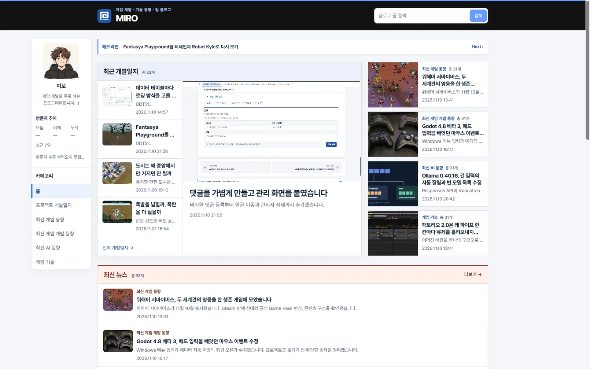

Tracefolio REPORTS & ISSUES
Tracefolio REPORTS & ISSUESMIRO 블로그를 miro-lab.pages.dev로 이전했습니다
부분 완료새 주소에 블로그를 배포하고 이전 링크를 301로 연결했습니다. GA4 URL을 바꾸고 AdSense와 Search Console의 새 주소 등록을 접수했습니다.
작업 결과
새 운영 블로그를 배포했습니다. 기존 게시물 링크와 댓글 기록을 유지했습니다. Google 서비스 등록은 접수됐으며 광고 심사와 사이트맵 보고서 갱신은 대기 중입니다.
변경 내용
적용 내용
운영 주소와 기존 링크
기본 주소, 자동 배포 대상, canonical, robots.txt와 사이트맵을 새 주소로 맞췄습니다. 기존 주소는 경로와 쿼리를 보존해 301로 전달합니다. 기존 댓글 삭제 비밀번호가 계속 검증되도록 댓글 API는 기존 Pages 프로젝트에 두고 새 주소의 요청을 허용했습니다.
flowchart LR Old[기존 주소 방문] --> Redirect[301과 원래 경로 유지] Redirect --> New[새 Pages 정적 본문] New --> Browser[새 주소의 댓글 UI] Browser --> Legacy[기존 Pages 댓글 API] Legacy --> Database[기존 D1과 댓글 시크릿]
댓글 API
functions/api/comments.js의 publicPost는 이전 호스트에서 새 운영 글을 확인합니다. onRequest는 기존 API에서 새 주소의 사전 요청과 CORS 응답을 처리합니다.
async function publicPost(env, url, post) {
const path = '/posts/' + encodeURIComponent(post) + '/';
const page = url.origin === legacyOrigin
? await fetch(new URL(path, productionOrigin), {redirect: 'error'})
: await env.ASSETS.fetch(new Request(new URL(path, url)));
await page.body?.cancel();
return page.ok && page.headers.get('Content-Type')?.startsWith('text/html');
}
export async function onRequest({request, env}) {
const isLegacyHost = new URL(request.url).origin === legacyOrigin;
const fromProduction = isLegacyHost && request.headers.get('Origin') === productionOrigin;
if (fromProduction && request.method === 'OPTIONS') {
return new Response(null, {
status: 204,
headers: {
'Access-Control-Allow-Origin': productionOrigin,
'Access-Control-Allow-Methods': 'GET, POST, DELETE',
'Access-Control-Allow-Headers': 'Content-Type',
'Vary': 'Origin',
},
});
}
let response;
try {
response = await handle(request, env);
} catch (error) {
console.error('Comment request failed', {name: error.name});
response = reply({error: '댓글을 처리하지 못했습니다. 잠시 후 다시 시도해 주세요.'}, 503);
}
if (isLegacyHost) response.headers.append('Vary', 'Origin');
if (fromProduction) response.headers.set('Access-Control-Allow-Origin', productionOrigin);
return response;
}
Google 등록과 운영 관리
기존 GA4 측정 ID를 유지하고 URL을 변경했습니다. 동일한 애드센스 계정에서 새 사이트 검토를 요청하고 이전 사이트 등록을 제거했습니다. Search Console URL 접두어 속성을 인증하고 사이트맵과 주소 이전 요청을 제출했습니다. 관리 Worker는 운영 코드의 URL 4개만 교체했고 방문 집계 Worker는 새 Origin을 허용합니다.
flowchart LR Pages[새 주소 배포] --> GA[기존 GA4 스트림 URL 변경] Pages --> Ads[애드센스 소유권 인증과 검토 요청] Pages --> SC[Search Console 소유권 인증] SC --> Map[사이트맵 제출] SC --> Move[301과 양쪽 소유권 검증 후 주소 이전]
대화 기록 요약
사용자는 주소와 Google 서비스 재등록을 요청한 뒤 첫 시도를 중단했습니다. 이름을 비교한 다음 “ㅇㅇ 그렇게하자”로 miro-lab을 확정했습니다. 진행 중 하이픈이 필수인지 물어 형식상 필수가 아니며 miro-lab 배포가 진행 중이라고 답했습니다.
검증
운영 소스 커밋 f7fe7b5를 main에 푸시했고, Cloudflare 운영 배포에 같은 커밋이 표시됐습니다.
새 홈페이지, 대표 글, 사이트맵, ads.txt와 GA4 자바스크립트는 HTTPS 200입니다. 기존 대표 글은 쿼리를 유지한 301입니다.
기존 댓글 API 조회 200과 새 Origin의 사전 요청 204, 방문자 집계 조회 200을 확인했습니다. 관리 Worker는 새 Origin의 요청을 받아 유효하지 않은 입력을 400으로 거부했습니다.
Search Console에서 소유권과 주소 이전 접수를 확인했습니다. 실제 URL 테스트에서 사이트맵 가져오기가 성공했고 공개 XML에 새 주소 180개가 들어 있습니다.

이전 전 · 기존 운영의 고정 배포 주소를 같은 크기로 다시 열었습니다.
이전 후 · 새 공개 주소의 블로그 본문과 카드 배치를 확인했습니다.
남은 사항
- 애드센스는 검토 중입니다. Search Console 사이트맵 목록에는 초기 가져오기 실패가 표시되며 Google 실시간 테스트는 성공했습니다. 검색 색인과 GA4 집계 반영은 미확인입니다.
- 댓글 쓰기·삭제를 이번 이전 과정에서 다시 실행하지 않았습니다. 기존 댓글 조회와 사전 요청을 확인했습니다.
- 관리 Worker의 운영 v2 설정과 저장소 설정의 차이를 확인했습니다. 이번에는 코드 전용 API로 갱신해 운영 바인딩을 유지했습니다. 지침 변경은 없습니다.
작업 시간
- 제안 시간: 15~25분. Google 심사 별도.
- 실제로 완료된 시간: 2026-11-11 00:14:59 KST 시작. 00:29 KST까지 운영 전환과 Google 실시간 검증을 확인했습니다. 약 14분.
- XERJ: 미사용 — Git, Wrangler, HTTPS 응답과 각 서비스의 운영 화면을 사용했습니다.